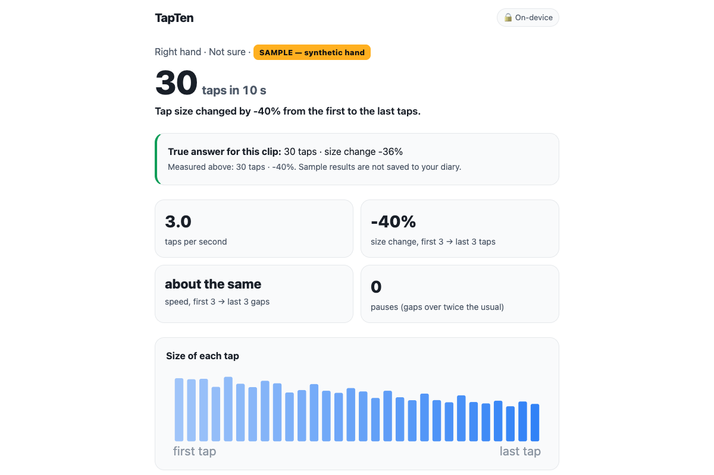

UnivaBio 2026 · AI for Human Health · individual entry · live: ryugi62.github.io/tapten · code: github.com/Ryugi62/tapten
People with Parkinson's disease see a neurologist every few months. Between visits, how their movement changed when medication wore off is reported from memory. At the bedside, clinicians rate finger tapping (MDS-UPDRS item 3.4: 10 taps of index finger on thumb, fast and big) and watch for taps that get slower and smaller (the “decrement”). TapTen uses a fixed 10-second window so tests are comparable. Phone screen-tap tests capture speed but cannot see how wide the fingers open.
AI part: Google MediaPipe Hand Landmarker (pre-trained, Apache-2.0) finds 21 3D hand points per frame inside the browser — we trained no model. Our part: opening = thumb-tip↔index-tip distance ÷ palm length → robust tap detection → speed, size change, pauses; a quality gate; and a benchmark with exact answers.

No patient videos yet (that needs ethics approval). So a rigged 3D hand is animated with a known tap schedule — 0.7–5 taps/s, shrinking 0–90 %, slowing, pauses, tremor, several views and distances, blur/dim/noise/15 fps — and run through the same model and analysis code. Two held-out sets were frozen before running (the second pre-registered in its own commit).
The page's Content-Security-Policy is connect-src 'self'; model and engine are bundled; no account. Do not change medication based on TapTen — normal ranges are not known. While testing we found the tracking runtime tries to send a usage log to odml.pa.googleapis.com — the policy blocks it (browser console, 2026-10-06).
People already living with Parkinson's and their care partners, to bring an objective home record — taken at the times that matter (morning “off”, after a dose) — to appointments. Neurologists get a dated table, not a recollection.
Finished: webcam test (auto-start, beeps), video-file mode, quality gate, motor diary + clinic sheet, benchmark with held-out and negative sets, CI.
Planned: measuring real people (healthy volunteers, test–retest), then patients with their neurologists; both-hand asymmetry.
Built by Taegeol Kim (student, Changwon National University, Korea) with AI coding assistance; SPEC.md and 33 unit tests cover the domain logic. Licenses: MIT (TapTen) · Apache-2.0 (MediaPipe) · MIT (three.js, WebXR hand model — benchmark only).